The four "Layout changes" from the launch review. Each picture is the real app with the demo's data, at your real sizes (a laptop at 1280 wide and 150%, a phone at 390). "After" is the same page with only that change made, so everything else is exactly as built. Nothing here is built yet.
Today the menu at laptop size is icons only, and you have to hover to find out what each one is.
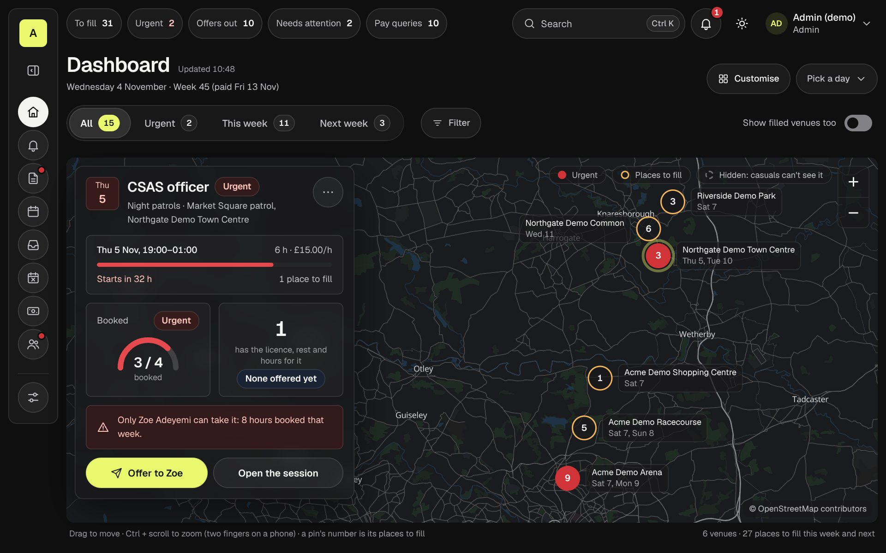
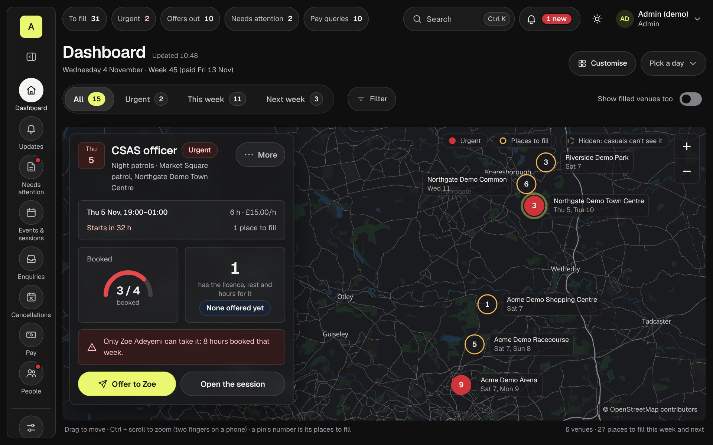
Why not open the full menu by default (the review's first idea)? At 1280 wide it takes 164px more, the dashboard gets too narrow for the card to sit on the map, and the card drops under it:
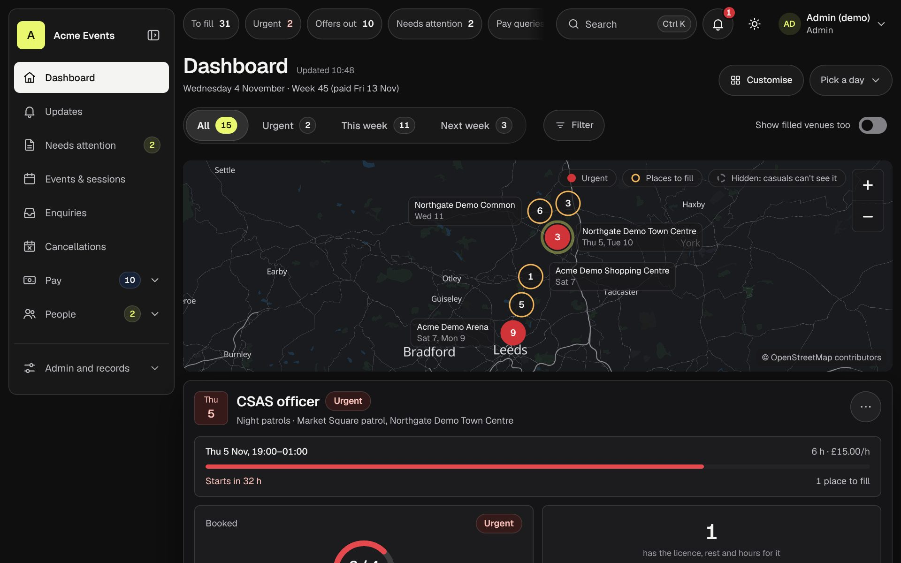
On a phone nothing changes: the Menu button already lists every page by name.
Three buttons that are only an icon today: the paper plane on each "To offer" row, the "…" on a session, and the bell's red number.
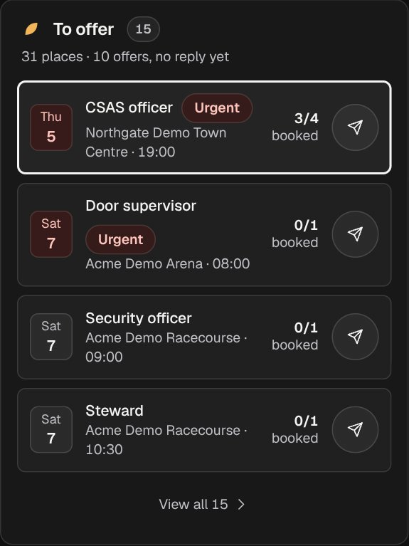
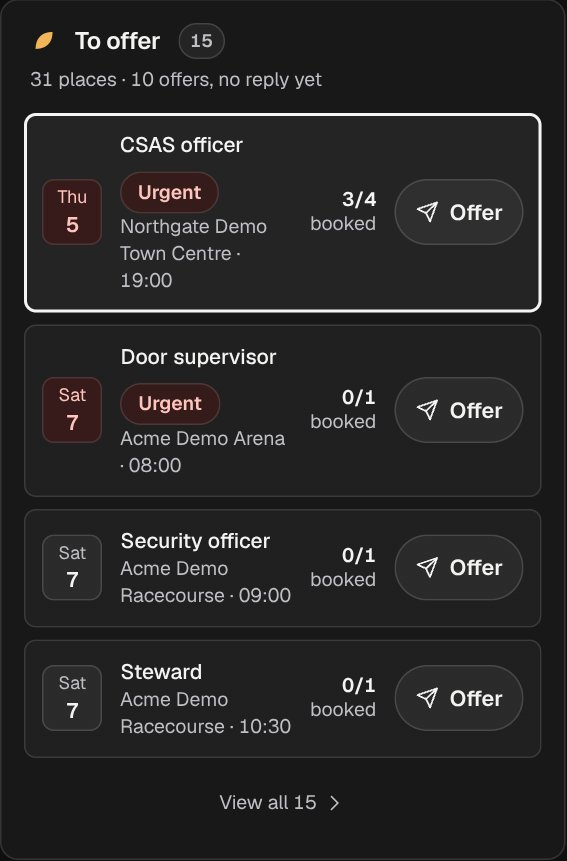
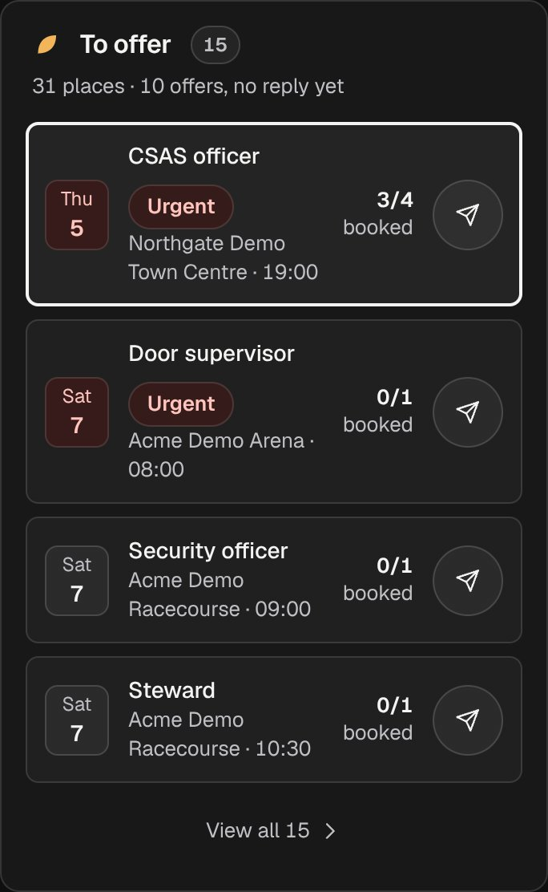
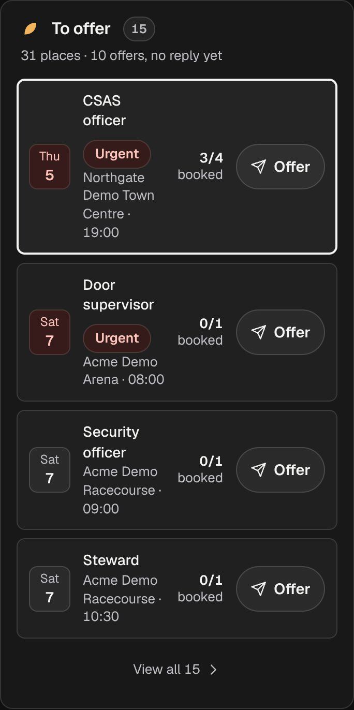
On a laptop it's in the "Menu" pictures above (top right). On a phone, the firm's name in the top bar makes room for it; the firm's mark stays.
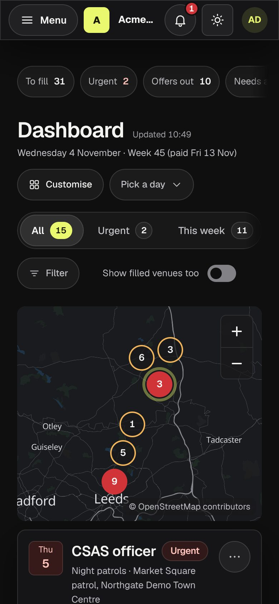
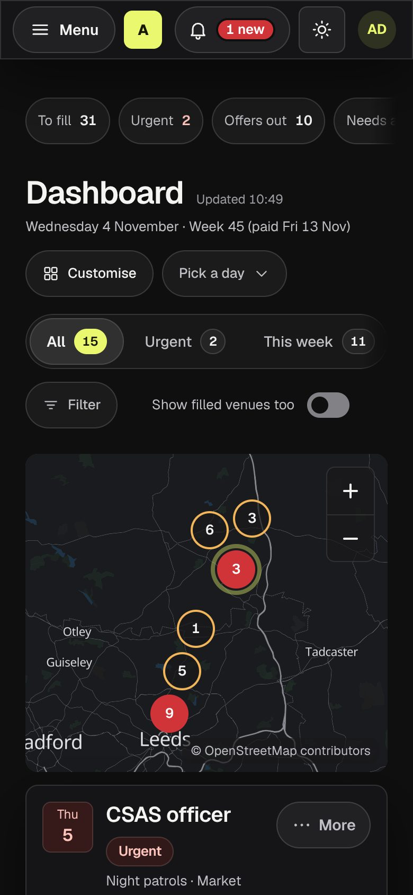
The red bar under the time looks like time running out, but it shows how much is booked. The "Booked" tile's gauge already shows that. And the "Urgent" chip in that tile repeats the one by the title.
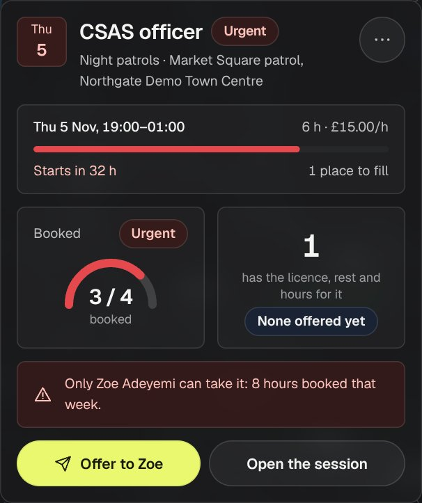
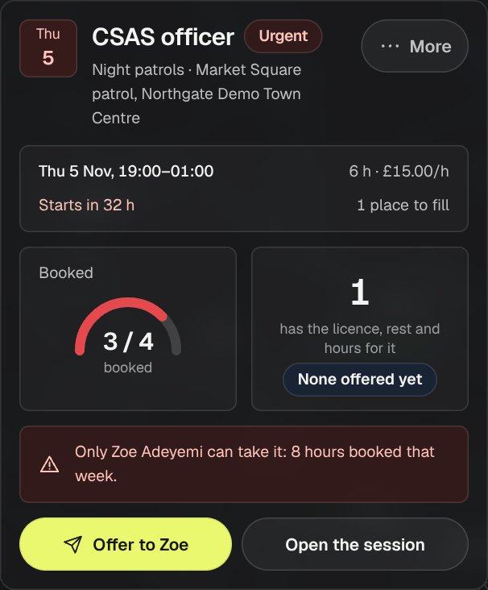
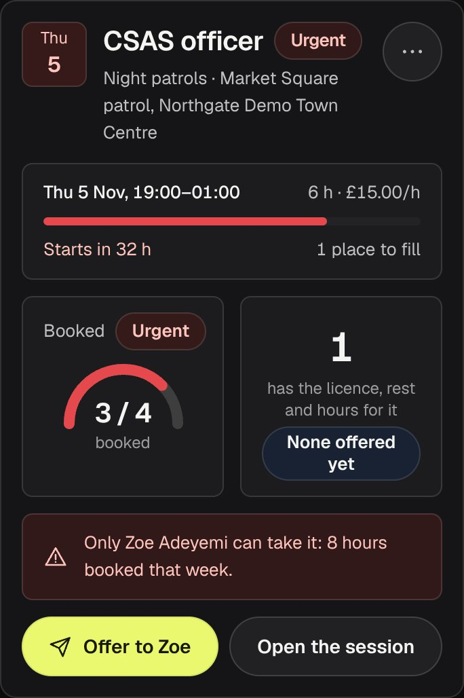
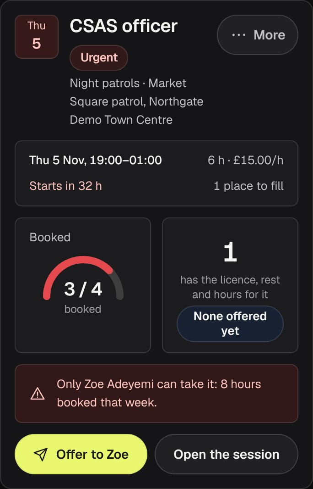
Today the phone map shows bare numbers: no key and no names. This comes with 27.4 (the map you can use), so saying yes there covers it. The picture is from the 27.4 mock-up.
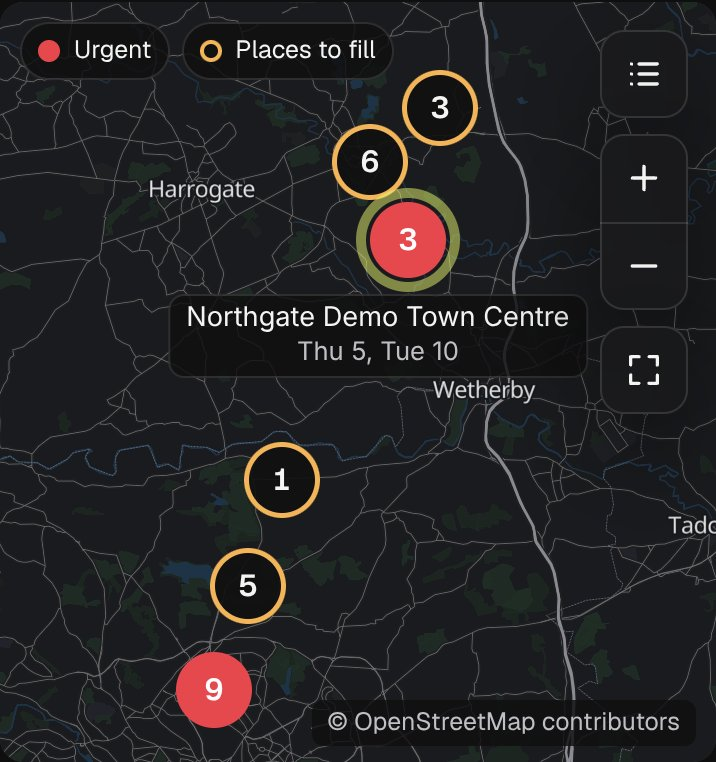
Zoe's staff photo is due for renewal. Today the row shows her initials, "ZA", which reads like her photo is fine. The Profile tab shows a bare "1".
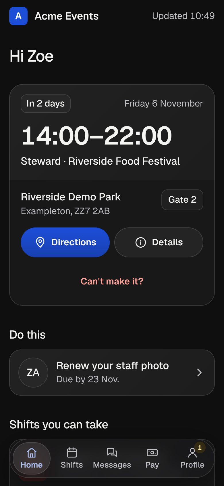
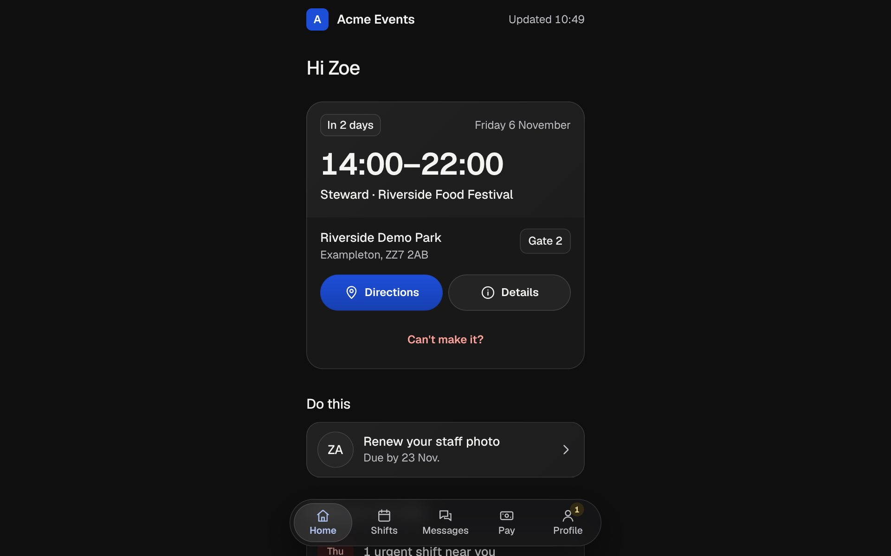
Say yes to all of them, or name the ones to change. Then I build them with their tests and screenshots, and run the full check. The light look follows from the same changes.